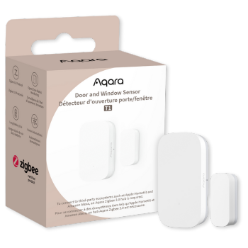

Door and Window Sensor T1
- Detects unauthorised door and window openings
- Turns lights, fans or curtains on/off when a door or window is opened/closed.
- Compact and rugged, easy to install and set-up.
- Features local AI facial recognition that can trigger various alerts and customised automations.
Historic Data Capture |
No Tools Needed |
Real Time Alert and Notification |
2-Year Battery Life |

Product Info
Description
The Aqara Door and Window Sensor T1 is a compact, battery-powered sensor designed to monitor the status of doors and windows by detecting when they open or close. Using Zigbee 3.0 technology, it connects seamlessly with Aqara's ecosystem and other Zigbee hubs, offering fast and reliable communication. This sensor can trigger automation sequences and alert users via the Aqara Home app, allowing for enhanced security and smart home automation. The T1 is compatible with Apple HomeKit, Amazon Alexa, and Google Assistant, enabling flexible integration with various smart home systems. With a low-power design, the battery can last up to two years, making it a convenient, maintenance-free addition to any smart home setup.
Key Features
- Maximum Versatility: Install the compact sensor on doors, windows, drawers, mailboxes, or AC units for added convenience and peace of mind.
- Multi-Ecosystem Support: Works with Apple Home, Amazon Alexa, Google Home, Matter, Samsung SmartThings, and Yandex Smart Home after binding to an Aqara hub.
- Aqara Home Automations: Trigger scenes and automations—like turning on lights when you open the door at night.
- Security Notifications: Activate alarm mode when leaving or sleeping; get notifications and alerts if a door or window is opened.
- Advanced Technology: Detects door/window status via sensor-magnet distance, with a battery life of over 2 years.
- OTA Update Support: Enjoy improved stability and functionality with over-the-air updates for the T1 series.
Specifications
| Category | Hub |
| Colour | White |
| Model | DW-S03D |
| Battery | CR1632 |
| Wireless Protocol: | Zigbee 3.0 |
| Dimensions | 41 × 22 × 11 mm (1.61 × 0.87 × 0.43 in) |
| Maximum Detection Distance: | 22 mm |
| Operating Temperature | -10 °C ~ 45 °C (14 °F ~ 113 °F) |
| Operating Humidity | 0 - 95%RH, non-condensing |
| What's in the Box | Sensor Unit (with Sticker) × 1, Magnet Unit × 1, User Manual × 1 |
Gallery
|  |  | |
| Front Image | Side Image | Product Box |
Automations and Complementary Products
Prevent Unexpected Light Shutdowns in Occupied Rooms:
When the contact sensor detects a door opening, the system will pause the "auto-off" light timer, ensuring lights stay on while the room is in use.
| Required Automation Products: | Door and Window Sensor T1 |
 Hub M3 |
 Presence Sensor FP2 |
Monitor Existing AC Status:
When the contact sensor detects that the AC is already on, it will prevent the IR controller from unnecessarily reactivating the AC.
| Required Automation Products: | Door and Window Sensor T1 |
Hub M3 |
IR Controller |
Save Energy When Doors or Windows Are Open:
If a door or window is opened, the system will automatically turn off the thermostat to conserve energy and reduce your carbon footprint.
| Required Automation Products: | Door and Window Sensor T1 |
Hub M3 |
 Temperature and Humidity Sensor T1 |
IR Controller (Heat pump) |
Automated Alert System:
Part of the Aqara Home alert system, the sensor can arm automatically with a Presence Sensor, sending an instant alert if a door, drawer, or window opens while you’re away.
| Required Automation Products: | Door and Window Sensor T1 |
Hub M3 |
Presence Sensor FP2 |
Concealed Door Installation:
For a discreet setup, the Door and Window Sensor T1 can be installed inside the door using a 23mm drill bit, leaving it invisible while maintaining functionality.
| Required Automation Products: | Door and Window Sensor T1 |
Door with thinkness greater than 30mm |
Product Support Documents
- Step by step installation instruction video (runtime 00:02:36): Installation Video
- Product User Manual (format PDF): User Manual
- Product FAQs (format PDF): Frequently Asked Questions